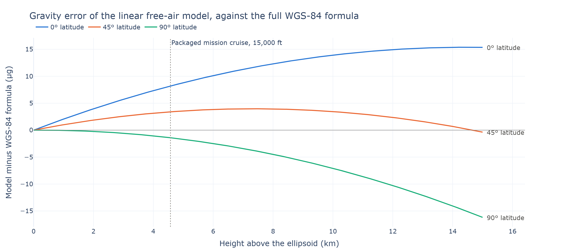

Earth & gravity¶
The navigator works on a rotating, slightly flattened Earth. Three of the Earth's properties enter the navigation equations:
- its shape, which sets how many metres a change in latitude or longitude is;
- its rotation, which the gyros sense and the navigator must remove;
- its gravity, which accelerometers cannot sense, so the navigator must add it back.
ins_sim takes all three from the WGS-84 model. Gravity matters most: to the navigator, an error in the gravity model looks exactly like an accelerometer bias.
Key results
- Position is curvilinear: latitude \(L_b\), longitude \(\lambda_b\) and height \(h_b\). Two radii of curvature turn their rates into metres: the meridian radius \(R_N\) for north-south motion and the transverse radius \(R_E\) for east-west motion.
- Earth rate (15.04 °/h) and the transport rate of an aircraft (8 °/h at 250 m/s) are of the same size, and the navigator accounts for both every step.
- Gravity is Somigliana normal gravity with a linear height correction. Below 10 km it is within 14 µg of the full WGS-84 formula.
- Gravity weakens by about 314 µg for every kilometre of height. That gradient is what makes the vertical channel unstable.
Physical picture¶
The Earth is modelled as an ellipsoid of revolution whose equatorial radius is 21 km longer than its polar radius. Position on it is curvilinear: the geodetic latitude is the angle the local vertical, the normal to the ellipsoid, makes with the equatorial plane. That normal misses the Earth's centre except at the equator and the poles, so geodetic latitude differs slightly from the angle seen from the centre.
Because the surface is curved differently in different directions, a metre of northward travel and a metre of eastward travel change latitude and longitude by different amounts. Two radii of curvature capture this:
- the meridian radius \(R_N\) is the radius of the circle that best fits the north-south meridian at that point;
- the transverse radius \(R_E\), at right angles to it, is the distance along the normal from the surface to the polar axis, as drawn above.
From the equator to the poles \(R_N\) grows by 1% and \(R_E\) by 0.3%, until the two are equal at the poles.
Continuous-time model¶
The ellipsoid and the radii of curvature¶
| Constant | Symbol | Value |
|---|---|---|
| Equatorial radius (semi-major axis) | \(R_0\) | 6,378,137.0 m |
| Flattening | \(f\) | 1 / 298.257223563 |
| Eccentricity squared | \(e^2 = f\,(2 - f)\) | 6.69437999 × 10⁻³ |
| Earth rotation rate | \(\omega_{ie}\) | 7.2921151467 × 10⁻⁵ rad/s |
where:
- \(R_N\) and \(R_E\) are the meridian and transverse radii of curvature [m];
- \(L_b\) is the geodetic latitude of the body [rad].
The curvilinear position then changes with the velocity \(\vvec{eb}{n} = (v_N, v_E, v_D)\) as
where \(\lambda_b\) is the longitude [rad], \(h_b\) the height above the ellipsoid [m], and \(v_N\), \(v_E\), \(v_D\) the North, East and Down velocity [m/s].
Earth rate¶
The Earth's rotation, seen from the NED frame, points along the polar axis: north and up.
where \(\wvec{ie}{n}\) is the angular rate of the Earth frame relative to inertial space, resolved in NED [rad/s]. At the equator it lies along North; at the poles it is vertical.
Transport rate¶
To stay level and pointing north while the vehicle moves over the curved Earth, the NED frame has to turn. Its angular rate relative to the Earth is the transport rate:
where \(\wvec{en}{n}\) is the angular rate of the NED frame relative to the Earth frame, resolved in NED [rad/s]. Flying north pitches the frame nose-down about East. Flying east rolls it about North and also turns it about Down, because the meridians converge towards the poles. An aircraft flying east at 250 m/s at 45° N turns its NED frame at 8.1 °/h about North and about Down, nearly as fast as the Earth's rotation turns it (10.6 °/h about each).
Gravity¶
An accelerometer measures specific force: its acceleration relative to inertial space, minus the gravitational acceleration it is falling under. At rest on the ground it reads 1 g upwards: the push of the ground holding it up. The navigator recovers acceleration by adding back the acceleration due to gravity \(\gvec{b}{n}\): gravitation combined with the centrifugal effect of the Earth's rotation, which is what a plumb line feels. For the WGS-84 ellipsoid this normal gravity points along the normal, so in NED it has a Down component only.
At the surface, the Somigliana formula gives its magnitude:
and ins_sim reduces it with height by the linear free-air correction:
where:
- \(g_e = 9.7803253359\) m/s² is normal gravity at the equator;
- \(k = 1.93185265241 \times 10^{-3}\) is the Somigliana constant of WGS-84;
- \(g(L_b, h_b)\) is the magnitude of gravity at the body [m/s²], from 9.780 m/s² at the equator to 9.832 m/s² at the poles at sea level.
The height correction implies a gravity gradient of
about 314 µg weaker for every kilometre of height. A navigator that thinks it is too high therefore computes too little gravity, which pushes it higher still: the instability of the vertical channel.
As implemented¶
Radii of curvature.
sin2_L = np.sin(L_b) ** 2
den = np.sqrt(1.0 - WGS84_E2 * sin2_L)
R_E = WGS84_A / den # transverse radius
R_N = WGS84_A * (1.0 - WGS84_E2) / (den ** 3) # meridian radius
Earth rate.
return np.stack(
[WGS84_OMEGA * np.cos(L_b), zeros, -WGS84_OMEGA * np.sin(L_b)], axis=-1)
Transport rate.
return np.stack([
v_E / (R_E + h_b),
-v_N / (R_N + h_b),
-v_E * np.tan(L_b) / (R_E + h_b),
], axis=-1)
Gravity.
sin2_L = np.sin(L_b) ** 2
g0 = g_e * (1.0 + k * sin2_L) / np.sqrt(1.0 - WGS84_E2 * sin2_L)
# Linear free-air correction: dg/dh ≈ −2g/R_0 near the surface
return g0 * (1.0 - 2.0 * h_b / WGS84_A)
Compared with Groves (2013)
The radii of curvature, Earth rate, transport rate and the Somigliana surface gravity are the same as in Groves1. Groves' NED gravity model keeps the full height dependence, including terms in the flattening and the Earth's rotation, and a small North component that grows with height, under 1 µg per kilometre. ins_sim keeps only the linear height term, and the Down component.
What it looks like¶

The difference between ins_sim's gravity and the full WGS-84 normal-gravity formula, which adds the flattening and rotation terms and a second-order height term. At 10 km it ranges from +14 µg at the equator to −7 µg at the poles. At the packaged mission's cruise height, 15,000 ft at 18.5° N, it is about +7 µg: comparable to the bias of a navigation-grade accelerometer. The truth generator and the navigator use the same model, though, so the approximation has no effect on the simulated navigation errors. It would matter only when comparing against real data or another simulator.
Two checks on the Validation page depend on this model: the Schuler period, set by \(g\) and \(R_E\), and the vertical-channel time constant, set by the gravity gradient.
Assumptions & limitations¶
Assumptions & limitations
- Normal gravity only. Real gravity departs from the ellipsoid's normal gravity: typically by tens of µg in magnitude, and by a few arcseconds in direction (the deflection of the vertical), more over mountains. A real INS that uses a normal-gravity model sees these departures as accelerometer-bias errors. ins_sim's truth uses the same model as its navigator, so they never appear.
- Linear height correction, as in the figure above, and no North component of gravity.
- No geoid. Heights are above the ellipsoid; mission altitudes given above mean sea level are used as ellipsoidal height (see Notation & conventions).
- Not over the poles. The transport rate contains \(\tan L_b\), and the NED frame is undefined at the poles. Navigators that cross them use other frames, such as wander-azimuth axes, which ins_sim does not implement.
- The Earth rotation rate is the value of the GPS interface specification, 7.2921151467 × 10⁻⁵ rad/s. The WGS-84 standard rounds it to 7.292115 × 10⁻⁵ rad/s; the difference is negligible.
In the code¶
| Quantity | Equation | Implemented in |
|---|---|---|
| Ellipsoid constants | \(R_0\), \(f\), \(e^2\), \(\omega_{ie}\) | WGS84_A, WGS84_F, WGS84_E2, WGS84_OMEGA |
| Radii of curvature | \(R_N\), \(R_E\) | wgs84_radii |
| Earth rate | \(\wvec{ie}{n}\) | earth_rate_n |
| Transport rate | \(\wvec{en}{n}\) | transport_rate_n |
| Gravity | \(g(L_b, h_b)\) | normal_gravity |
| Curvilinear position rates | \(\dot L_b\), \(\dot\lambda_b\), \(\dot h_b\) | strapdown_navgrade and TruthTrajectory, integrated each step |
This example tabulates the radii and surface gravity from the equator to the pole, the gravity gradient, and the Earth and transport rates of an aircraft at 45° N:
"""The WGS-84 Earth model: radii of curvature, gravity, Earth rate and transport rate."""
import numpy as np
from ins_sim.core.earth_model import (earth_rate_n, normal_gravity,
transport_rate_n, wgs84_radii)
DEG_PER_HOUR = np.rad2deg(1.0) * 3600.0 # converts rad/s to °/h
MICRO_G = 9.80665e-6 # 1 µg in m/s²
np.set_printoptions(precision=3, suppress=True, floatmode="fixed")
print("Latitude R_N [km] R_E [km] g at h_b = 0 [m/s²]")
for lat_deg in (0, 30, 45, 60, 90):
L_b = np.deg2rad(lat_deg)
R_N, R_E = wgs84_radii(L_b)
print(f"{lat_deg:7d}° {R_N / 1e3:9.3f} {R_E / 1e3:9.3f} {normal_gravity(L_b, 0.0):12.6f}")
# Gravity weakens with height, by about 2g/R_0 per metre.
L_b = np.deg2rad(45.0)
weaker = normal_gravity(L_b, 0.0) - normal_gravity(L_b, 1000.0)
print(f"\nAt 45° N, gravity 1 km up is {weaker / MICRO_G:.0f} µg weaker")
# Earth rate, and the transport rate of an aircraft flying east at 250 m/s
# and 4572 m: the two are of the same size.
omega_ie_n = earth_rate_n(L_b)
omega_en_n = transport_rate_n([0.0, 250.0, 0.0], L_b, 4572.0)
print("At 45° N, in °/h:")
print(" Earth rate omega_ie^n ", (omega_ie_n * DEG_PER_HOUR).round(3) + 0.0)
print(" transport rate omega_en^n, 250 m/s E ", (omega_en_n * DEG_PER_HOUR).round(3) + 0.0)
Latitude R_N [km] R_E [km] g at h_b = 0 [m/s²]
0° 6335.439 6378.137 9.780325
30° 6351.377 6383.481 9.793247
45° 6367.382 6388.838 9.806198
60° 6383.454 6394.209 9.819177
90° 6399.594 6399.594 9.832185
At 45° N, gravity 1 km up is 314 µg weaker
At 45° N, in °/h:
Earth rate omega_ie^n [ 10.636 0.000 -10.636]
transport rate omega_en^n, 250 m/s E [ 8.066 0.000 -8.066]
References¶
-
Groves (2013), Chapter 2, for the ellipsoid, curvilinear position, Earth rotation and gravity models. The WGS-84 constants are defined in NGA (2014). ↩